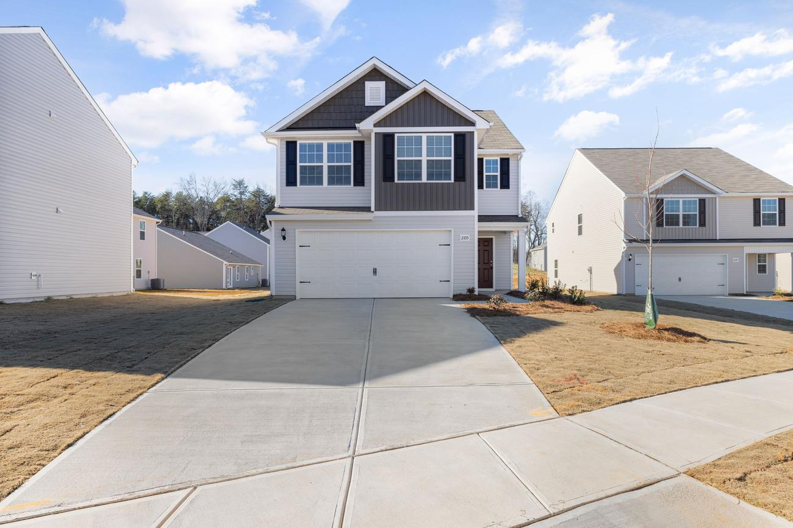
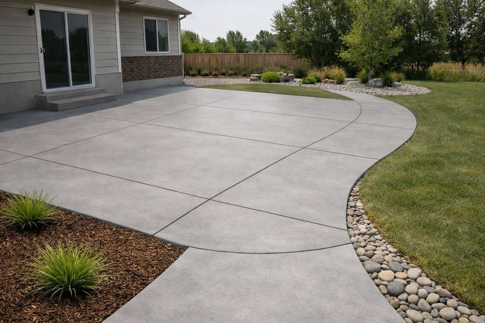
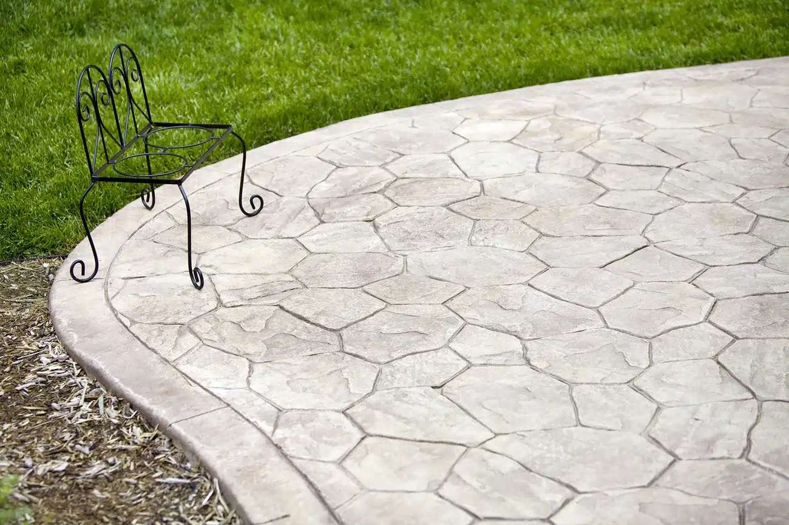
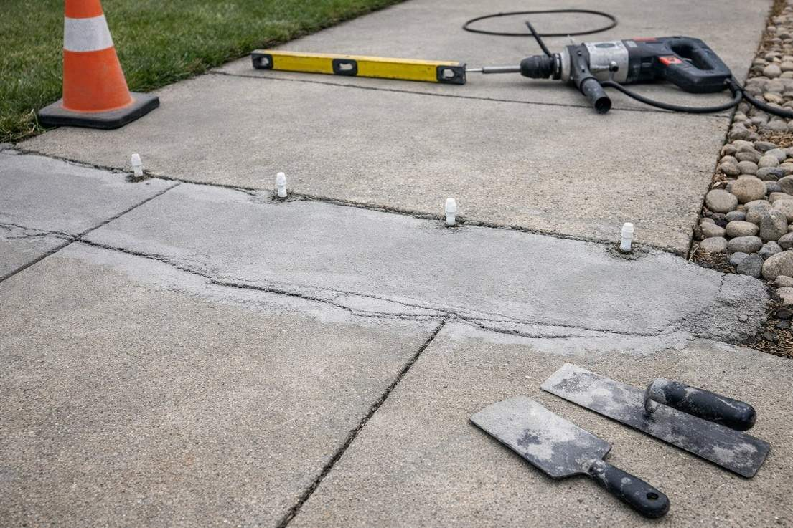
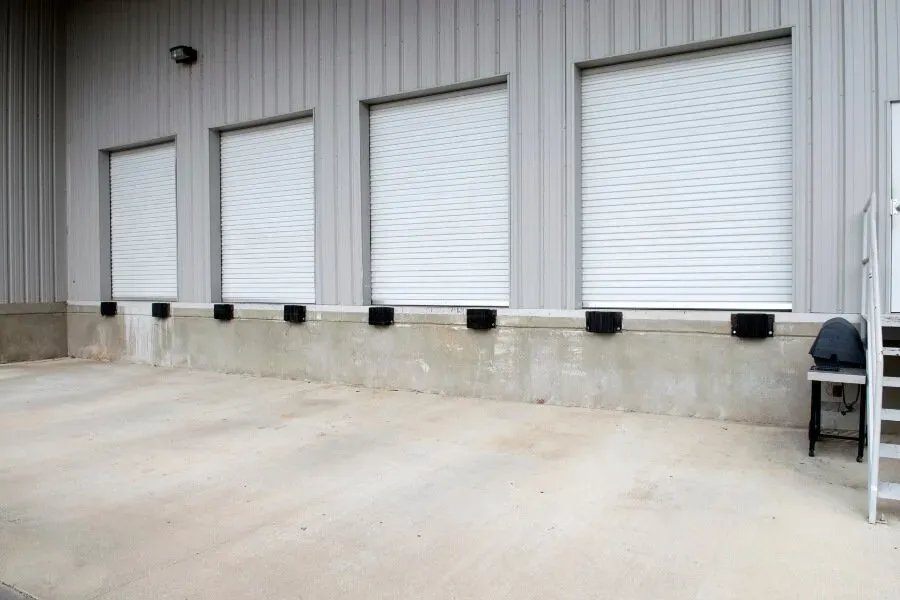

Concrete Driveways
New pours, replacements and widenings engineered for Utah freeze-thaw cycles, with proper base prep and control joints.
Driveways in Logan →Driveways, patios, foundations and decorative concrete built to last through Cache Valley winters. Locally trusted, licensed and insured — with free, no-pressure estimates.
From the first hard freeze in fall to the heat of midsummer, concrete in northern Utah goes through a punishing cycle that cracks, heaves and spalls poorly built slabs. Cache County Concrete pours driveways, patios, foundations, flatwork and decorative concrete across Logan and the surrounding Cache Valley — and we build every project for our local climate, with the base prep, drainage, air-entrained mix and proper control joints it takes to last decades, not seasons.
Whether you're a homeowner planning a new driveway or backyard patio, a builder who needs footings and slabs poured right, or a business that needs durable commercial flatwork, you get the same thing: honest advice, a clear written estimate up front, and concrete done right the first time. Estimates are always free and there's never any pressure.
New pours, replacements and widenings engineered for Utah freeze-thaw cycles, with proper base prep and control joints.
Driveways in Logan →Backyard patios, sidewalks and pathways — broom, smooth, or decorative finishes that fit your home.
Patios in Logan →Stamped, stained and colored concrete that mimics stone, brick or slate for a fraction of the cost.
Stamped Concrete →Footings, slabs, garage and shed foundations poured level, square and to code.
Foundations →Cracked, sunken or settling slabs lifted, resurfaced or replaced to restore safety and curb appeal.
Repair & Leveling →Parking areas, approaches, ADA ramps and commercial flatwork for Cache Valley businesses.
Commercial Concrete →We visit your property in Logan, talk through the project, and give you a clear written quote — no pressure.
Proper grading, base, forms and rebar before we pour, so the finished concrete holds up for decades.
We finish, cut control joints, clean up the site, and walk the project with you before we call it done.
Based in Logan and pouring concrete throughout Cache Valley. If your town isn't listed, call us — we likely cover it.






Air-entrained mixes, compacted bases and proper control joints, so your concrete survives freeze-thaw instead of cracking through it.
A clear written quote after we see the site — no guessing over the phone, and an honest repair-vs-replace recommendation either way.
Driveways, patios, foundations, decorative work, repair and commercial flatwork — one local crew for the whole job.
We know the soils, the climate and the local requirements from Logan to Hyrum, and we build accordingly.
Proper licensing and insurance for your protection and peace of mind on every project.
The longevity is in the prep most people never see. We don't cut the corners that cause callbacks.
Most flatwork in the Cache Valley area runs roughly $7–$15 per square foot installed, depending on the project, thickness, prep and finish. Decorative finishes like stamping cost more. Every job is different, so we give a free written estimate after seeing the site.
Yes — every estimate is free, written and no-pressure. Call or text (435) 495-4170 or use the form below, and we'll usually schedule a visit within 24 hours.
Late spring through early fall is ideal, while temperatures stay above freezing during curing. We can pour in cooler weather with blankets and mix adjustments, but we avoid pouring into a hard freeze.
You can usually walk on it after about 24 hours. For a driveway, wait roughly 7 days before driving on it and about 28 days before parking heavy vehicles, so it reaches full strength.
For most uses here, concrete lasts longer, needs less maintenance and adds more value than asphalt, and unlike pavers it's one solid slab with no joints for weeds to grow through. We'll help you weigh the options for your project.
We pour throughout Cache Valley — Logan, North Logan, Smithfield, Hyrum, Providence, Nibley, River Heights, Hyde Park, Millville, Wellsville and nearby towns. If yours isn't listed, call — we likely cover it.